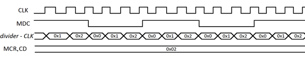

Приемо-передатчик MIIM служит для обмена информацией о конфигурации физического уровня и среды передачи. Перед началом использования ehl_emac следует получить информацию о режиме работы устройства. В минимальном варианте информация состоит из режима обмена (полный/половинный дуплекс), и скорости передачи (10M / 100M / 1G / 10G). Подробная информация о конфигурационных регистрах содержится в описании на выбранный PHY.
Для обмена данными ehl_emac формирует тактовый сигнал mdc и кадр в соответствии со стандартом (см. [1] гл. 22.2.4.5). Частота mdc определяется в соответствии с формулой (1). Коэффициент деления задается MCR.CD.
Fmdc = Fclk / [2 * (MCR.CD + 1)] (1)
Формирование mdc. MCR.CD = 0x02, коэффициент деления = 6.
.В таблице представлен пример значений частоты mdc для различных коэффициентов деления при Fclk = 50 МГц.
| MCR.CD | Fmdc |
|---|---|
| 0 | 25 МГц |
| 1 | 12.5 МГц |
| 2 | 8.33 МГц |
| 3 | 6.25 МГц |
| 4 | 5 МГц |
Интерфейс MIIM может быть подключен к нескольким PHY устройствам. Адресуемое PHY устройство определяется MCR.PA, а регистр этого устройства MCR.RA. Данные передаются из MDR, принимаются в MDR. Управление направлением и состоянием передачи определяется MCR[6:0]. По окончании приема/передачи генерируется маскируемый флаг прерывания IRQ_FLAG.MIIM.
MCR [0x300]: Регистр управления MIIM
| Биты | Название | Описание | Доступ | Начальное значение |
|---|---|---|---|---|
| 31:27 | - | Резерв | R | 0 |
| 26:17 | CD | Clock Divider. Коэффициент деления частоты MDC относительно частоты clk. | R/W | 0x3FF |
| 16:12 | PA | PHY Address. Адрес выбираемого PHY устройства на шине MIIM. | R/W | x |
| 11:7 | RA | Register Address. Адрес регистра PHY, к которому происходит обращение. | R/W | x |
| 6 | TXIP | Transmit in Progress. Флаг активности передачи. Устанавливается аппаратно после установки MCR.START (при MCR.TRX_TYPE = b’1). Сбрасывается аппаратно по окончании передачи. | R | 0 |
| 5 | RXIP | Receive in Progress. Флаг активности приема. Устанавливается аппаратно после установки MCR.START (при MCR.TRX_TYPE = b’0). Сбрасывается аппаратно по окончании приема. | R | 0 |
| 4 | TXIE | Tx Interrupt Enable. Разрешение прерывания по окончании передачи. Прерывание устанавливается на 1 такт по окончании передачи: |
R/W | 0 |
| 3 | RXIE | Rx Interrupt Enable. Разрешение прерывания по окончании приема. Прерывание устанавливается на 1 такт по окончании приема: |
R/W | 0 |
| 2 | PRE_ENA | Preamble Enable. Разрешение использования преамбулы перед трансфером: |
R/W | 0 |
| 1 | TRX_TYPE | Transfer type. Выбор типа трансфера: |
R/W | 0 |
| 0 | START | Start transfer. Устанавливается программно для запуска передачи/приема по интерфейсу MIIM. Сбрасывается аппаратно на следующем такте после установки. | R/W/SC | 0 |
Если идет обмен по MIIM (MCR.TXIP = b’1 или MCR.RXIP = b’1), то запись в регистры MCR, MDR игнорируется.
MDR [0x304]: Регистр данных MIIM
| Биты | Название | Описание | Доступ | Начальное значение |
|---|---|---|---|---|
| 31:16 | - | Резерв | R | 0 |
| 15:0 | DAT | Содержит данные, передаваемые по MIIM во время передачи и записывается данными, полученными во время приема. | R/W | x |